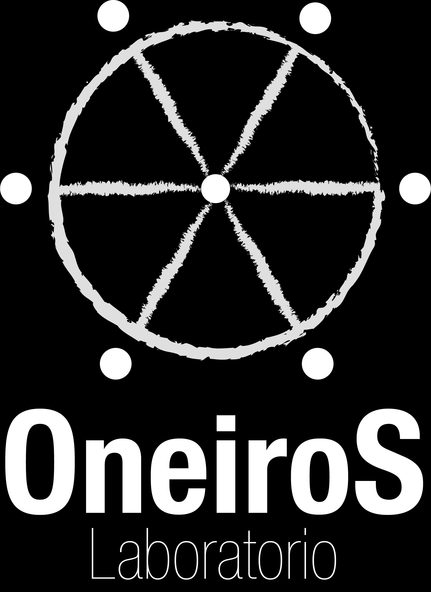

<!-- Modal de centros culturales -->
<div class="modal fade " id="productosServicios" tabindex="-1" aria-labelledby="exampleModalLabel" aria-hidden="true">
  <div class="modal-dialog modal-xl modal-dialog-scrollable">
    <div class="modal-content">
      <div class="modal-header">
        <h5 class="modal-title" id="exampleModalLabel">InvertiCultura</h5>
        <button type="button" class="close" data-dismiss="modal" aria-label="Close">
          <span aria-hidden="true">&times;</span>
        </button>
      </div>
      <div class="modal-body">

        <!-- Frentes Culturales -->
        <section id="centrosCulturales">

          <div class="row justify-content-center flex-wrap ">

            <!-- Frente Cultural de Medios de Comunicación -->
            <div class="card" style="width: 18rem;">
              <div class="card-body">
                <h5 class="card-title">Escuela Popular Mano Abierta </h5>
                <h6 class="card-subtitle mb-2 text-muted">Producción Musical
                  <br>Producción Visual<br>Pedagogía
                </h6>
                <a data-toggle="modal" data-target="#mediosComunicacion" class="card-link">Click aquí</a>
              </div>
            </div>

         <!-- 11. Agente Cultural Oneiros Laboratio -->
              <div class="card">
                <a href="#">
                  
                </a>

                <div class="card-body d-flex justify-content-between align-items-center">
                  <a href="#">
                   Oneiros Laboratorio </a>
                  <button type="button" class="btn btn-danger" data-toggle="modal" data-target="#OneirosLaboratorioProducto">más
                    info</button>
                </div>
              </div>
              <!-- 11. Fin del agente cultural Oneiros laboratorio -->
          </div>
        </section>
        <!-- Fin de la sección de centros culturales -->
      </div>

      <div class="modal-footer">
        <button type="button" class="btn btn-secondary" data-dismiss="modal">Cerrar</button>
        <!-- <button type="button" class="btn btn-primary">Save changes</button> -->
      </div>
    </div>
  </div>
</div>
<app-productos-servicios-por-cada-frente></app-productos-servicios-por-cada-frente>

<!-- Final del modal de centros culturales -->
